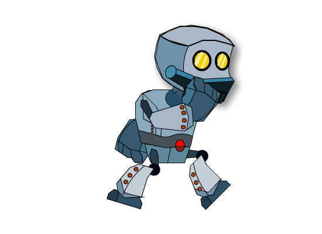

Home
Certificados
Jogo de Pong
Recriei o jogo clássico de Pong reutilizando o Javascript! Ele é um arcade com temática de tênis de mesa, com gráficos bidimensionais, desenvolvido pela Atari e lançado originalmente em 1972.
▲